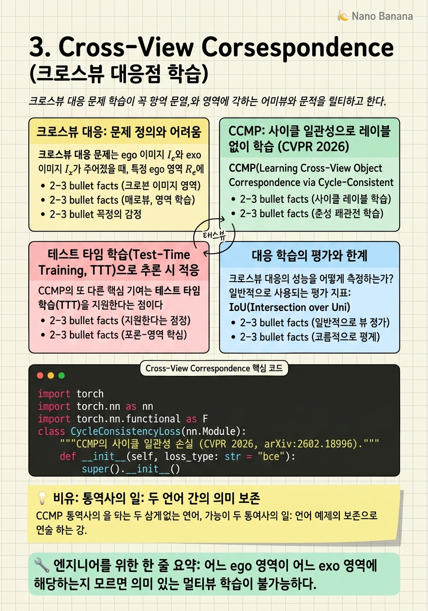

Cross-View Correspondence

🎯 학습 목표
- 크로스뷰 대응의 정의와 왜 어려운지를 설명할 수 있다
- 사이클 일관성(cycle consistency)을 자기지도 신호로 사용하는 방식을 수식과 함께 설명할 수 있다
- CCMP 논문의 핵심 아이디어와 테스트 타임 학습(TTT) 적용을 이해한다
- 대응점 학습의 평가 지표와 한계를 파악한다
두 시점의 비디오가 있을 때, '저 exo 화면의 저 사람 손이 ego 화면의 어느 부분에 해당하는가?'를 알아내는 것이 크로스뷰 대응(cross-view correspondence) 문제다. 이는 ego-exo 융합의 가장 기본적인 하위 문제로, 이를 해결하지 않고서는 의미 있는 멀티뷰 학습이 불가능하다.
크로스뷰 대응은 두 층위에서 정의된다. 픽셀-레벨 대응은 두 이미지에서 물리적으로 같은 3D 점에 해당하는 픽셀 쌍을 찾는 것이다 — 카메라 파라미터와 깊이 정보가 있으면 기하학적으로 계산 가능하다. 의미적 대응은 '같은 의미를 가진' 패치나 객체를 매칭하는 것이다 — '저 ego의 손'과 '저 exo의 손'이 같은 손이라는 것을 의미적으로 이해해야 한다.
CVPR 2026의 주목할 성과 중 하나는 바로 이 대응 학습 문제에 대한 자기지도 접근법인 CCMP(Cycle-Consistent Mask Prediction) (arXiv:2602.18996)다. 레이블 없이 사이클 일관성을 자기지도 신호로 활용하고, 테스트 타임에도 적응할 수 있는 방법을 제안한다.
핵심 내용
크로스뷰 대응: 문제 정의와 어려움
크로스뷰 대응 문제는 ego 이미지 \(I_e\)와 exo 이미지 \(I_x\)가 주어졌을 때, 특정 ego 영역 \(R_e\)에 해당하는 exo 영역 \(R_x\)를 찾는 것으로 형식화할 수 있다:
\[f_{\text{corr}}: (I_e, R_e, I_x) \to R_x\]
이 문제가 어려운 이유는 다층적이다. 첫째, 극단적 뷰포인트 변화: 같은 손이 ego에서는 클로즈업으로, exo에서는 작은 영역으로 보인다. 크기, 방향, 배경이 완전히 다르다. 둘째, 가려짐(occlusion): 한 시점에서 보이는 물체가 다른 시점에서는 가려질 수 있다. 셋째, 레이블 획득의 어려움: 픽셀 대응 어노테이션은 인간에게도 어렵고 시간이 많이 든다. 이런 이유로 자기지도 방법이 중요하다.
기존 접근법들은 주로 카메라 파라미터를 이용한 기하학적 대응 계산에 의존했다. Ego-Exo4D의 캘리브레이션 데이터가 있으면 에피폴라 기하학을 통해 이론적 대응을 구할 수 있다. 하지만 이 방법은 정적 장면에서만 잘 작동하며, 움직이는 물체(손, 도구)에서는 깊이 추정 오차로 인해 부정확하다.
CCMP: 사이클 일관성으로 레이블 없이 학습 (CVPR 2026)
CCMP(Learning Cross-View Object Correspondence via Cycle-Consistent Mask Prediction) (arXiv:2602.18996, CVPR 2026)는 레이블 없이 ego-exo 간 객체 대응을 학습하는 자기지도 방법이다. 코드: github.com/shannany0606/CCMP.
핵심 아이디어: 순방향과 역방향 예측의 사이클 일관성을 자기지도 신호로 사용한다.
- 순방향(ego → exo): ego 소스 마스크 \(M_e\)를 잠재 표현 \(z\)로 인코딩해 exo 이미지에서 해당 영역 \(\hat{M}_x\)를 예측한다
- 역방향(exo → ego): 예측된 타깃 마스크 \(\hat{M}_x\)를 다시 ego 이미지로 투영해 원래 소스 마스크 \(M_e\)를 재구성한다
- 사이클 손실(cycle loss): 재구성된 마스크 \(\hat{M}_e\)가 원래 \(M_e\)와 일치해야 한다
수식으로:
\[\mathcal{L}_{\text{cycle}} = \mathcal{D}(\hat{M}_e, M_e) = \mathcal{D}(\text{Pred}(\hat{M}_x, I_e), M_e)\]
이 양방향 제약이 레이블 없이도 강력한 자기지도 신호를 제공한다. 만약 예측이 틀리면 역방향에서 원본 마스크를 재구성할 수 없으므로, 이 사이클 일관성 조건 자체가 올바른 대응을 학습하도록 강제한다.
테스트 타임 학습(Test-Time Training, TTT)으로 추론 시 적응
CCMP의 또 다른 핵심 기여는 테스트 타임 학습(TTT)을 지원한다는 점이다. 일반적인 딥러닝 모델은 추론(inference) 단계에서 가중치를 고정시킨다. 하지만 새로운 ego-exo 장면이 훈련 분포와 크게 다를 경우, 고정된 모델은 잘 대응하지 못한다.
CCMP는 추론 시에도 사이클 일관성 손실을 사용해 어노테이션 없이 모델을 해당 테스트 장면에 맞게 미세 적응할 수 있다. 이는 특히 도메인 이동(domain shift)이 큰 ego-exo 환경에서 유용하다.
TTT의 핵심 장점:
- 어노테이션 불필요: 테스트 장면의 레이블이 없어도 사이클 일관성 신호만으로 적응 가능
- 온라인 적응: 각 테스트 샘플에 대해 순간적으로 적응 가능
- 도메인 강건성: 훈련/테스트 분포 차이를 실시간으로 보상
단점도 있다: TTT는 추론 시간이 늘어난다. 각 테스트 샘플마다 최적화 단계를 거쳐야 하므로 실시간 응용에는 계산 비용이 문제가 될 수 있다.
대응 학습의 평가와 한계
크로스뷰 대응의 성능을 어떻게 측정하는가? 일반적으로 사용되는 평가 지표:
IoU(Intersection over Union): 예측 마스크 \(\hat{M}_x\)와 실제 타깃 마스크 \(M_x\)의 겹침 비율. \(\text{IoU} = \frac{|\hat{M}_x \cap M_x|}{|\hat{M}_x \cup M_x|}\)
PCK(Percentage of Correct Keypoints): 예측 키포인트가 실제 키포인트로부터 특정 거리 내에 있는 비율.
Consistency@K: 사이클 일관성 메트릭 — ego→exo→ego 라운드트립 후 원래 위치에서 K 픽셀 이내로 돌아오는 비율.
현재 방법들의 한계:
- 정적 객체에 편향: 대부분의 방법이 정적 또는 느리게 움직이는 객체에서는 잘 작동하지만, 빠른 손 움직임이나 도구 사용 시 성능이 급감한다
- 의미적 대응 vs. 기하적 대응의 혼재: 같은 '손'이지만 다른 시점에서 완전히 다른 포즈로 보일 때, 픽셀 대응이 의미론적으로 얼마나 유효한지 불명확하다
- 시간적 확장: 대부분의 방법이 단일 프레임 쌍에서 작동하며 시간적 일관성을 보장하지 않는다
💡 비유로 이해하기
크로스뷰 대응 학습은 통역 작업과 비슷하다. 한국어 문장과 영어 문장이 있을 때 '저 한국어 단어가 영어의 어느 단어에 해당하는가?'를 찾는 것처럼, ego 영역과 exo 영역 간의 의미적 매핑을 찾는다.
좋은 통역사는 단어를 직역(픽셀-레벨 대응)하지 않는다 — 의미를 번역(의미적 대응)한다. '손이 냄비를 잡고 있다'는 ego의 클로즈업 장면이 exo에서는 '요리사가 조리대 앞에 서서 냄비를 조작하고 있다'로 보인다. 단어(픽셀)를 직역하면 맞지 않지만, 의미(행동의 의미)를 연결하면 맞다.
CCMP의 사이클 일관성은 '번역한 문장을 다시 원래 언어로 번역했을 때 원문과 같아야 한다'는 백번역(back-translation)과 정확히 같은 원리다. NLP에서 비지도 기계 번역에 성공적으로 적용된 사이클 일관성 원리가 이제 비전에서 ego-exo 대응으로 확장된 것이다.
💻 코드 예시
CCMP의 핵심 아이디어인 사이클 일관성 손실을 구현하는 간단한 예시다. PyTorch로 작성되었으며 실제 CCMP 구현의 핵심 구조를 반영한다.
import torch
import torch.nn as nn
import torch.nn.functional as F
class CycleConsistencyLoss(nn.Module):
"""CCMP의 사이클 일관성 손실 (CVPR 2026, arXiv:2602.18996)."""
def __init__(self, loss_type: str = "bce"):
super().__init__()
self.loss_type = loss_type
def forward(
self,
src_mask: torch.Tensor, # [B, 1, H, W] ego 소스 마스크
pred_tgt: torch.Tensor, # [B, 1, H, W] 예측된 exo 타깃 마스크
recon_src: torch.Tensor, # [B, 1, H, W] 재구성된 ego 마스크
) -> torch.Tensor:
"""순방향: src → pred_tgt, 역방향: pred_tgt → recon_src."""
# 사이클 일관성: 재구성된 마스크가 원본과 일치해야 함
if self.loss_type == "bce":
cycle_loss = F.binary_cross_entropy_with_logits(
recon_src, src_mask.float()
)
elif self.loss_type == "dice":
recon_prob = torch.sigmoid(recon_src)
intersection = (recon_prob * src_mask).sum(dim=(2, 3))
dice = 1 - (2 * intersection + 1) / (
recon_prob.sum(dim=(2,3)) + src_mask.sum(dim=(2,3)) + 1
)
cycle_loss = dice.mean()
return cycle_loss
class CCMPForwardPass(nn.Module):
def __init__(self, encoder, predictor):
super().__init__()
self.encoder = encoder # 마스크를 잠재 표현으로 인코딩
self.predictor = predictor # 소스 뷰 특징 + 잠재 표현 → 타깃 마스크
self.cycle_loss = CycleConsistencyLoss("dice")
def forward(self, ego_feat, exo_feat, ego_mask):
# 순방향: ego 마스크 → exo 마스크 예측
latent_z = self.encoder(ego_mask)
pred_exo_mask = self.predictor(exo_feat, latent_z)
# 역방향: 예측된 exo 마스크 → ego 마스크 재구성
latent_z_recon = self.encoder(pred_exo_mask.detach().sigmoid())
recon_ego_mask = self.predictor(ego_feat, latent_z_recon)
loss = self.cycle_loss(ego_mask, pred_exo_mask, recon_ego_mask)
return pred_exo_mask, loss
핵심은 두 번의 predictor 호출이다: 첫 번째는 ego→exo 방향, 두 번째는 다시 exo→ego 방향. recon_ego_mask와 원래 ego_mask의 차이가 사이클 손실이다. pred_exo_mask.detach()를 사용해 역방향 그래디언트가 순방향 예측을 불안정하게 만들지 않도록 주의한다.
🏭 현업에서의 평가
✅ 시니어가 보는 것
- 사이클 일관성의 수학적 정의와 자기지도 신호로의 활용 방식
- TTT가 필요한 시나리오와 그 계산 비용 상의 트레이드오프
- 픽셀-레벨 대응과 의미적 대응의 차이와 각각의 활용 케이스
- 대응 학습 평가 지표(IoU, PCK, Consistency@K)의 의미와 한계
⚠️ 레드 플래그
- 사이클 일관성을 단순히 '왕복 일치'라고만 설명하고 수식이나 구현 디테일을 모르는 경우
- TTT가 무엇인지 모르거나 추론 시간 비용 문제를 인식하지 못하는 경우
- 대응 학습을 '오광류(optical flow) 추정과 같다'고만 설명하는 경우
🎤 예상 인터뷰 질문
- CCMP의 TTT에서 사이클 일관성 손실만으로 충분한가, 아니면 추가 정규화가 필요한가? 왜?
- Ego-Exo4D의 캘리브레이션 데이터가 있을 때 기하학적 대응과 CCMP 같은 학습 기반 대응 중 어떤 것이 언제 더 적합한가?
- 크로스뷰 객체 대응을 크로스뷰 행동 대응으로 확장하려면 어떤 추가 요소가 필요한가?
✨ 핵심 요약
대응 학습이 융합의 전제
어느 ego 영역이 어느 exo 영역에 해당하는지 모르면 의미 있는 멀티뷰 학습이 불가능하다.
사이클 일관성 = 레이블 없는 자기지도
ego→exo→ego 라운드트립에서 원본 마스크를 재구성하는 일관성이 강력한 자기지도 신호다.
CCMP (CVPR 2026)
잠재 표현 기반 마스크 예측 + 사이클 손실 + TTT — 레이블 없이 ego-exo 객체 대응을 학습한다.
TTT: 추론 시 적응
어노테이션 없이 테스트 샘플에 모델을 실시간 적응시키는 TTT는 도메인 이동이 큰 ego-exo에 특히 유용하다.
의미적 대응 ≠ 픽셀 대응
같은 물리적 점을 찾는 것(기하학적)과 같은 의미를 가진 영역을 찾는 것(의미적)은 다른 문제다.
시간적 확장이 미해결 과제
대부분의 대응 방법이 단일 프레임 쌍에서 작동하며, 시간적으로 일관된 크로스뷰 대응은 열린 문제다.